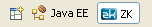

Sesión 1: Introducción al framework ZK
El framework ZK
Aplicaciones RIA
ZK es un framework Java para el desarrollo de aplicaciones web ricas. Estas aplicaciones pretenden proporcionar al usuario una interacción similar a las aplicaciones de escritorio, sin abandonar las ventajas del residir en un navegador y poder comunicarse on-line con el servidor. Están basadas en widgets o componentes (más de 130 en el caso de ZK) que es posible utilizar en una página web. Y, lo más importante, permiten la interacción con el servidor y la modificación de los componentes sin tener que recargar la página en el navegador ni construir una nueva.
De esta forma, las aplicaciones RIA se separan de las tradicionales aplicaciones web en las que el usuario navega por páginas para introducir datos, pulsa un botón para enviar la información y se recarga una página en la que se muestra el resultado. Las aplicaciones RIA suelen tener una única página cuyos datos se comunican al servidor y se actualizan mediante la detección de los distintos eventos que el usuario provoca cuando utiliza los componentes.
Google es uno de los más avanzados promotores de este tipo de aplicaciones, con ejemplos como Google Maps. En esta aplicación web utiliza JavaScript de forma intensiva para interactuar con el propio mapa y para seleccionar opciones, definir acciones (imprimir, enviar, etc.) o refrescar la vista del mapa. Todas estas acciones se realizan en una única página del navegador.

Aunque tiene algunos componentes multimedia, y también el componente Google Maps, la propuesta de ZK es algo más modesta en cuanto a componentes. La lista de componentes está basada en el estándar XUL de la fundación Mozilla, e incluye paneles, menús desplegables, rejillas, cajas o listas.
En la demo de ZK que ofrecen sus desarrolladores se pueden comprobar la diversidad de componentes, eventos y posibilidades de ZK.
Características de ZK
El framework ZK fue desarrollado por Tom M. Yeh y Henri Chen, fundadores de Potix en Taipei (Taiwan) y hecho público a la comunidad en 2006. Desde entonces se han ido desarrollando y publicando nuevas versiones de forma ininterrupida.
ZK es un framework open-source de desarrollo de aplicaciones web Ajax, que permite la creación de interfaces de usuario para las aplicaciones web sin utilizar JavaScript. El diseño de las interfaces se hace mediante componentes basados en el estándar XUL de Mozilla.
ZK utiliza un enfoque centrado en el servidor mediante el que las páginas de descripción de la interfaz residen en el servidor y son allí procesadas y transformadas en páginas HTML+JavaScript que se envían al navegador. En este sentido es muy similar a la estrategia de otros frameworks Java como JSF.
La historia de versiones en sourceforge nos da una idea del intenso trabajo desarrollado en el framework y de su madurez:
- zk-1.0.0 (13.3 MB): 02/2006
- zk-1.1.0 (14.7 MB): 03/2006
- zk-2.0.0 (27.5 MB): 06/2006
- zk-2.1.0 (30.3 MB): 08/2006
- zk-2.2.0 (36.4 MB): 12/2006
- zk-2.3.0 (66.1 MB): 03/2007
- zk-2.4.0 (63.3 MB): 06/2007. Mantenida con bug fixes hasta 2.4.3 (06/2008)
- zk-3.0.0 (68.2 MB): 11/2007. Mantenida hasta 3.0.8 (08/2008)
- zk-3.5.0 (115.4 MB): 09/2008
- zk-3.6.0 (150.7 MB): 03/2009. Mantenida hasta la actualidad 3.6.4 (03/2010)
- zk-5.0.0 (154.0 MB): 01/2010
Entre las características que hacen de ZK un framework digno de destacar se encuentran las siguientes:
- Open Source y comunidad: ZK es uno framework open source más activos. El framework tiene más de 100.000 líneas de código y más de 1.000.000 de descargas (se encuentra situado en el puesto 399 de los proyectos más descargados de sourceforge). La comunidad contiene usuarios de más de 190 paises y, junto con los desarrolladores de Potix, han escrito más de 100 artículos y tutoriales y más de 40.000 mensajes en los foros de ayuda y soporte de Potix.
- Experiencia de usuario ricas: más de 170 componentes compatibles XUL/HTML basados en Ajax. Gran cantidad de widgets basados en otros proyectos OS: JFreeChart, JasperReports, Google Maps, FCKeditor, Timeline, Timeplot, ExtJS o jQuery.
- Basado en estándares: ZK está basado en estándares aceptados como XUL, XML o JSP/Servlets.
- Facilidad de integración: tanto en el lado del cliente como en el servidor, ZK se integra fácilmente con otras tecnologías como HTML, jQuery (cliente) o Spring, JPA, JSF (servidor).
- Acceso móviles: ZK soporta Java Mobile, Android y varios browsers para móviles.
- Licencia: la licencia de ZK 5 es LGPL, la licencia más abierta de GNU. Esta licencia permite comercializar la aplicación en la que se utilice ZK y no obliga a abrir su código.
El lenguaje ZUML
Las aplicaciones ZK son aplicaciones web Java (ficheros WAR) que pueden incluir clases y librerías Java como cualquier aplicación basada en Servlets o JSP. La definición de la interfaz de usuario de la aplicación se realiza mediante el lenguaje ZUML (ZK User Interface Markup Language).
Los ficheros que definen las páginas ZUML suelen tener la extensión .zul. Estas páginas son procesadas por el motor de ZK (en concreto por el ZK Loader) para construir una página HTML en la que se incluyen todos los elementos y componentes definidos.
Uno de los puntos fuertes de ZK es la potencia del lenguaje ZUML, por la cantidad de elementos que podemos definir en estas páginas. En la misma página ZUML se puede definir los componentes que forman la interfaz, el código que gestiona los eventos del usuario o la interacción entre los componentes y los datos Java. Los principales elementos que forman parte del lenguaje ZUML son:
- Componentes ZUL: componentes que aparecen en la interfaz de usuario que tienen un comportamiento definido procesando los eventos del usuario y mostrando la información de la aplicación. Están basados en los componentes definidos en el estándar XUL de Mozilla: ventanas, paneles, listas, cajas, menús desplegables, etc.
- Expresiones EL: es posible utilizar expresiones EL similares a las definidas en JSP para definir valores de los distintos atributos que definen el comportamiento de los componentes.
- Data binding: mediante las expresiones de data binding es posible asociar distintos valores de los componentes a objetos Java definidos en la aplicación.
- Código de script: es posible incluir en las páginas ZUML código de script que se ejecuta en el servidor utilizando Java (con el intérprete BeanShell), JavaScript (con el intérprete Rhino), Ruby (con el intérprete JRuby) o Groovy.
- Instrucciones de procesamiento: expresiones que ejecuta el motor de ZK antes de procesar el árbol de componentes y que sirven para inicializar algunos elementos y estados de la interfaz.
- Clases Java: es posible también conectar los componentes definidos en las páginas ZUML con clases Java que funciona de controladores, en las que se define la gestión de los eventos.
El siguiente código muestra un ejemplo de una página ZUML en la que se definen varios componentes, entre los que se encuentra un gmap basado en el componente de Google Map de Google.
<!-- resort.zul -->
<window id="win" use="org.zkforge.resort.ui.ResortController"
title="ZK Tutorial" width="1024px" border="normal">
<script src="http://maps.google.com/maps?file=api&v=2&
key=ABQIAAAACZ90QS5pNiEvbXhI0k2NLRTGXUEQDrMr1bP0DVG
8X36ZVCheaRQMK05Rsdneh4skNF6KXaLI8maLlA" type="text/javascript"/>
<hbox>
<listbox id="lb" onSelect="win.refreshUI()">
<listhead sizable="true">
<listheader label="Name" width="100px"/>
<listheader label="Description" width="250px"/>
</listhead>
<listitem forEach="${win.resorts}" value="${each}">
<listcell label="${each.name}" />
<listcell label="${each.description}" />
</listitem>
</listbox>
<gmaps id="gmap" zoom="16" showTypeCtrl="true" mapType="satellite"
showLargeCtrl="true" width="610px" height="400px">
<ginfo id="ginfo"/>
</gmaps>
</hbox>
<groupbox mold="3d" width="100%">
<caption label="Resort"/>
Name: <textbox id="name" disabled="true"/>
Description:<textbox id="desc" disabled="true"/>
Latitude: <doublebox id="lat" disabled="true"/>
Longitude: <doublebox id="lng" disabled="true"/>
</groupbox>
</window>
En la siguiente imagen podemos ver el resultado de la página. La interfaz de usuario recoge los datos (nombres, descripciones, latitudes y longitudes) de la aplicación y los muestra en una listbox. El usuario puede pulsar en cualquiera de las filas y los datos de la posición se actualizan en la tabla inferior y el mapa de google la muestra.
Otros frameworks RIA
Una ventaja de ZK con respecto a otros frameworks como GWT, Flex o JavaFX es que la mayor parte del código de la aplicación se ejecuta en el servidor. En el servidor se transforma la página ZUML en un árbol de componentes, se ejecuta el código de scripting, se llaman a las funciones Java que procesan los eventos, etc.
Ventajas de utilizar un framework basado en el servidor:
- Más fácil de portar a distintos navegadores y plataformas (móviles, por ejemplo).
- Más sencillo de utilizar: es muy fácil acceder a los objetos de negocio y de datos desde la presentación.
- Mayor robustez y seguridad.
- Mayor facilidad de mantener, probar y modificar.
Otros frameworks basados en el servidor son JSF, con todas sus implementaciones como RichFaces o IceFaces. Frente a estos frameworks, la utilización de ZK tiene como principales ventajas:
- Facilidad de desarrollo de prototipos gracias a los lenguajes de scripting en las propias páginas.
- Integración con XML y HTML.
- Modelo de multi-threading de gestión de eventos.
Páginas útiles sobre ZK
Cuando comenzamos a aprender a programar con ZK es útil tener a mano un conjunto de páginas web de referencia en las que consultar y resolver las dudas y problemas. Destacamos algunas:
- Proyecto en sourceforge. Desde la página del proyecto en sourceforge se puede descargar las distintas versiones que van apareciendo del proyecto, acceder a proyectos hermanos de ZK (como ZK ZKEditor o ZK Google Maps) y consultar el estado de los bugs de las distintas distribuciones.
- Small Talks. La documentación de ZK está publicada en una wiki similar a la que gestion la Wikipedia. Las Small Talks son páginas con tutoriales y artículos bastante interesantes sobre el framework. Están elaborados por personas de la comunidad o de la empresa Potix.
- Guía de desarrollador (versión PDF local) y guía de referencia (versión PDF local).
- ZK/How-Tos: una extensa colección de consejos y recetas.
- Una aplicación completa desarrollada por Stephan Gerth
- Java APIs, (fichero ZIP)
- Foro
- Noticias
Arquitectura de ZK
Las aplicaciones de escritorio tienen una interfaz de usuario mucho más rica que las aplicaciones tradicionales de internet, pero sufren de los problemas fundamentales de su carácter local: dificultad de acceso a un servidor centralizado y dificultad en la distribución y actualización de nuevas versiones.
Frente a las aplicaciones locales, las aplicaciones web tienen el problema de que se ejecutan en un navegador y están limitadas al tipo de interfaz soportada por este medio. La web se ha desarrollado utilizando el HTML como lenguaje estándar de definición de páginas. Los navegadores y las aplicaciones web se han orientado a mostrar este tipo de páginas, basando las interfaces de usuario en formularios que recogen la información del usuario y en sucesivas páginas que muestran información.
Arquitectura Ajax
JavaScript y la arquitectura Ajax ofrecen una solución a este planteamiento, permitiendo la actualización dinámica de las páginas HTML con los datos devueltos por el servidor.
La siguiente figura muestra el flujo de peticiones entre el navegador y el servidor en una aplicación web tradicional y en una aplicación con arquitectura Ajax.

En el modelo basado en Ajax, las páginas HTML contienen código JavaScript que ejecuta el navegador, y con el que se construyen interfaces de usuario dinámicas que se ejecutan en la misma página (menús, listas, paneles, etc.). Este código JavaScript interactua con el usuario y termina realizando peticiones HTTP al servidor. El servidor recibe la petición, la procesa y devuelve datos XML como respuesta. Es importante la diferencia con el enfoque tradicional. El servidor no devuelve una nueva página HTML, sino un conjunto de datos en formato XML. Estos datos sirven al motor de Ajax para actualizar distintos componentes de la misma página en la que se ha realizado la petición.
Frameworks basados en el servidor
Uno de los problemas del enfoque de los frameworks Ajax es que obliga a incluir código JavaScript (¡y a programarlo!) en las páginas HTML. Este código es difícil de desarrollar, de probar y de mantener. El código JavaScript que gestiona la interfaz es difícil de reutilizar de una forma organizada. Además, es muy complicado incluir su comprobación en sistemas automatizados de prueba en los que se integre el proyecto. Por ello, este código se convierte muchas veces en el punto débil de un proyecto robusto, bien comprobado y mantenible.
La solución nos la proporcionan los frameworks basados en el servidor, en los que el código JavaScript se encapsula en componentes de alto nivel que pueden ser combinados y reutilizados con facilidad. Por ejemplo, en ZK se utiliza un lenguaje XML (ZUML, ZK User interface Markup Language) para definir las interfaces interfaces de usuario. En este lenguaje descriptivo los componentes se combinan y se incluyen unos dentro de otros formando elaborados árboles sin escribir ni una sola línea de código JavaScript. El servidor genera las páginas HTML que contienen todo el código JavaScript necesario para que el navegador muestre los componentes y permita al usuario interactuar con ellos.
Una de las ventajas de este enfoque es que se simplifica enormemente el desarrollo, ya que sólo es necesario un único elemento para definir la interfaz: el lenguaje ZUML. El código Ajax se genera automáticamente a partir de páginas definidas en este lenguaje. De esta forma se automatizan las tareas tediosas y propensas a errores relacionadas con el código Ajax: compatibilidad de navegadores, mantenibilidad de distintas versiones, modificación y ampliación de la interfaz, etc.
Arquitectura de ZK
El funcionamiento de ZK es distinto según se realice una petición a una página por primera vez o se actualice una página ya generada por el framework. El núcleo de todo el proceso es el motor ZK, encargado de recibir las peticiones y realizar todo el proceso que termina en la respuesta al navegador. La siguiente figura muestra el proceso de generación de una página.
En la figura vemos como se construye por primera vez una página ZUL. El navegador lanza una petición de una página ZUL. El motor ZK recibe la petición y localiza la página ZUL asociada. Analiza el árbol XML de la página y crea el árbol de objetos Java componentes ZK. Con el árbol ya creado, el motor ZK lanza los eventos opcionales relacionados con la creación de la página y ejecuta el código Java existente en la página con el que se accede a las capas del modelo de la aplicación. Por último, este código modifica los componentes con el resultado de las llamadas a la lógica de negocio y el motor de ZK termina transformando el árbol de componentes en un página HTML en la que los componentes se transforman en objetos HTML y código JavaScript. El navegador recibe esta página y la muestra. Junto con la página, se carga en el navegador un motor ZK cliente que es el encargado de procesar la interacción con el usuario, modificar árbol DOM de componentes en el cliente y generar las peticiones y consultas de nuevo al servidor.
La siguiente figura muestra el resultado de la interacción del usuario con la página generada.
En la figura vemos cómo la página mantiene un árbol DOM de componentes ZK en forma de código JavaScript y componentes HTML. El motor ZK en el cliente detecta el evento JavaScript onClick y lo convierte en una petición HTTP al servidor. Allí lo recibe el motor ZK de actualización que mantiene su propio árbol de componentes ZK en forma de objetos Java. El motor ZK actualiza la cola de eventos de la aplicación (puede haber más de uno, generado por alguna petición previa) y gestiona la cola de hilos de eventos, activándolos y suspendiéndolos. Consulta y ejecuta el código de la aplicación relacionado con el evento, lo que permite acceder a las capas de lógica de negocio de la aplicación. Por último, se actualiza el árbol de componentes y se devuelve una respuesta al motor ZK en el cliente, que actualiza el DOM del cliente de forma adecuada.
El motor ZK
Podemos separar el funcionamiento del framework ZK en tres grandes módulos:
- ZK Layout Engine: también llamado ZK Loader, es el motor de ZK encargado generar el árbol de componentes y la página HTML inicial a partir de una petición de una página ZUML.
- ZK Client Engine: motor de ZK en la página cargada en el navegador. Se trata de código JavaScript encargado de capturar los eventos del usuario, comunicarse con el servidor y recibir sus respuestas. Con estas respuestas se actualiza el árbol DOM de la página, modificándose sus componentes. Se trata de la parte cliente de la arquitectura Ajax.
- ZK Update Engine: también llamado ZK AU (Asychronous Update) Engine es la parte del servidor de la arquitectura Ajax.
Instalación y ejecución del servicio Tomcat de Windows
Suponemos también que tenemos instalada la última versión de Tomcat (la versión 6.0.26 en el momento de escribir esto). Si no es así, puedes descargar y ejecutar la aplicación que lo instala como un servicio de Windows (disponible en la página de software):
1. Lanzamos el instalador de Tomcat y aceptamos todas las opciones que nos ofrece por defecto. En la pantalla para elegir componentes escogemos también los ejemplos, que no están marcados por defecto. Y cuando solicite un usuario y contraseña de administrador podemos escoger 'admin' y 'adminadmin'.
El instalador extrae por defecto el programa en el directorio:
C:\Archivos de programa\Apache Software Foundation\Tomcat 6.0
Llamaremos a este directorio $TOMCAT_HOME.
2. Deberemos lanzar y detener Tomcat desde el administrador de servicios de Windows. Para acceder a esta herramienta podemos ejecutar el comando services.msc en el lanzador del menú de inicio. Hacemos un doble click en el servicio Apache Tomcat 6 y aparecerá la ventana desde la que podemos administrar este servicio:
3. Para comprobar que el servidor está funcionando podemos acceder a la dirección http://localhost:8080/ donde aparecerá una página HTML proporcionada por Tomcat. Desde esa página es posible también ejecutar servlets y páginas JSP.
4. Por último, una vez iniciado el servicio podemos detenerlo pulsando el botón correspondiente. Debemos tener en cuenta que sólo puede haber un proceso escuchando un determinado puerto (el 8080 en este caso) y que cuando estemos desarrollando y probando aplicaciones web en Eclipse deberemos tener detenido el servicio Tomcat, para permitir que se lance el proceso interno utilizado por Eclipse.
Configuración básica de ZK
Las aplicaciones ZK son aplicaciones web que hay que desplegar en un contenedor web. En esta sección veremos cómo instalar una primera aplicación web ZK, compuesta por todas las librerías ZK, el fichero de configuración web.xml y una página ZUL. Suponemos que ya tenemos instalado y en marcha el servicio Tomcat en Windows.
Comenzamos descargando la distribución 5.0.1 del framework ZK:
Una vez descargado el fichero ZIP crearemos en el directorio $TOMCAT_HOME\webaps una aplicación web que contenga las librerías de ZK, el fichero web.xml que configura la aplicación ZK y el fichero de saludo index.zul. La estructura final del directorio será la siguiente:
+miZK
index.zul
+WEB-INF
web.xml
zk.xml
+lib
zk.jar
...
1. En el directorio $TOMCAT_HOME\webapps crea un nuevo directorio llamado miZK. Ese será el nombre de la aplicación.
2. Dentro de miZK crea el directorio WEB-INF. Dentro de él crea el directorio lib y copia en él todos los ficheros jar que contiene la distribución de ZK:
zk-bin-5.0.1\dist\lib\*.jar zk-bin-5.0.1\dist\lib\ext\*.jar
3. Dentro del directorio WEB-INF crea el siguiente fichero de configuración web.xml:
Fichero miZK\WEB-INF\web.xml:
<web-app>
<!-- ZK -->
<listener>
<description>Used to clean up when a session is destroyed</description>
<display-name>ZK Session Cleaner</display-name>
<listener-class>org.zkoss.zk.ui.http.HttpSessionListener</listener-class>
</listener>
<servlet>
<description>ZK loader for ZUML pages</description>
<servlet-name>zkLoader</servlet-name>
<servlet-class>org.zkoss.zk.ui.http.DHtmlLayoutServlet</servlet-class>
<init-param>
<param-name>update-uri</param-name>
<param-value>/zkau</param-value>
</init-param>
<load-on-startup>1</load-on-startup>
</servlet>
<servlet-mapping>
<servlet-name>zkLoader</servlet-name>
<url-pattern>*.zul</url-pattern>
</servlet-mapping>
<servlet-mapping>
<servlet-name>zkLoader</servlet-name>
<url-pattern>*.zhtml</url-pattern>
</servlet-mapping>
<servlet>
<description>The asynchronous update engine for ZK</description>
<servlet-name>auEngine</servlet-name>
<servlet-class>org.zkoss.zk.au.http.DHtmlUpdateServlet</servlet-class>
</servlet>
<servlet-mapping>
<servlet-name>auEngine</servlet-name>
<url-pattern>/zkau/*</url-pattern>
</servlet-mapping>
<welcome-file-list>
<welcome-file>index.zul</welcome-file>
<welcome-file>index.zhtml</welcome-file>
<welcome-file>index.html</welcome-file>
<welcome-file>index.htm</welcome-file>
</welcome-file-list>
</web-app>
4. Por último, vamos ya a crear la página ZK con un ejemplo de un componente. Va a ser una sencilla ventana en la que aparezca el típico mensaje "Hola mundo".
En el directorio miZK crea el fichero zk index.zul (lo salvamos con codificación UTF-8):
Fichero miZK\index.zul:
<?page title="Hola Mundo" contentType="text/html;charset=UTF-8"?> <zk> <window title="Mi primera ventana" border="normal" width="200px"> ¡Hola, mundo! </window> </zk>
5. Abrimos un navegador, nos aseguramos de que Tomcat está funcionando conectándonos a http://localhost:8080/ y accedemos a la página que acabamos de crear abriendo la URL: http://localhost:8080/miZK/. Aparecerá un sencillo panel con el título y el contenido que acabamos de definir:
Una aplicación de prueba
Vamos a instalar una aplicación de prueba para comprobar el funcionamiento de ZK. Se trata del ejemplo que hemos visto en el que se listan un conjunto de lugares y se muestran en Google Maps.
1. En primer lugar, descargamos el fichero zkresort.zip. Lo descomprimimos y veremos el fichero resort.war.
2. Copiamos el fichero WAR en el directorio $TOMCAT_HOME\webapps. Esperamos unos segundos y vemos que Tomcat detecta la aplicación WAR y la descomprime en el directorio con el mismo nombre resort. Si miramos dentro de la carpeta veremos una estructura similar a la aplicación ejemplo que hicimos anteriormente:
+resort
resort.zul
resort_databind.zul
+META-INF
+WEB-INF
web.xml
zk.xml
+lib
## ficheros .jar con las librerías de ZK
+classes
## clases Java:
## org.zkforge.resort.model.Resort
## org.zkforge.resort.ui.ResortController
El fichero resort_databind.zul contiene otra versión de la demo en la que se utiliza data binding para acceder a los datos Java.
3. Comprobamos que la aplicación funciona correctamente accediendo con el navegador a la URL: http://localhost:8080/resort/resort.zul.
4. Por último, abrimos el fichero resort.zul en un editor de texto y modificamos algunas etiquetas. Comprobamos que se ha modificado también la aplicación web.
Instalación de Eclipse
El desarrollo de ZK se realiza en el entorno de programación Eclipse. Para instalarlo, puedes descargar la versión de Eclipse Galileo (Eclipse 3.5) para Windows disponible en la página de software:
1. Instalamos Eclipse y abrimos un nuevo espacio de trabajo llamado zk-workspace en el que vamos a desarrollar todos los proyectos del curso.
Debemos instalar un servidor Tomcat en el espacio de trabajo que acabamos de crear. Suponemos que ya hemos ejecutado el instalador de Apache Tomcat como un servicio Windows. Tras la instalación se habrá creado el directorio C:\Archivos de programa\Apache Software Foundation\Tomcat 6.0, en el que se habrán copiado todos los programas y ficheros necesarios. Este directorio es el que habrá que indicar en la instalación del servidor en Eclipse.
2. Para instalar Tomcat en Eclipse debemos escoger la opción File > New > Other > Server > Server. Seleccionamos el tipo de servidor Apache > Tomcat v6.0 Server y el directorio de instalación indicado previamente.
3. Una vez instalado, probamos a arrancar el servidor. Para ello activamos la vista Servers que estará situada en el panel inferior de Eclipse y pulsamos el botón de Start.
Si el servicio de Tomcat de Windows está activo, aparecerá un mensaje de error cuando activamos el servidor en Eclipse, debido a que el puerto 8080 está ya ocupado. Detenemos el servicio de Windows y ya podemos trabajar normalmente en Eclipse.
Instalación de ZK Studio
En esta sección vamos a detallar una guía para instalar el entorno ZK Studio, que se ejecuta como un plug-in de Eclipse. Si no lo tenemos instalado, podemos descargarlo e instalar la versión de Galileo que tenemos disponible en la página de software:
1. Abrimos eclipse en el espacio de trabajo zk-workspace. Este será el espacio de trabajo en el que crearemos todos los proyectos del curso.
2. Vamos a instalar ZK Studio. Seleccionamos Help > Install New Software....
3. Añadimos el sitio de ZK Studio. Pulsamos Add... y añadimos la URL http://studioupdate.zkoss.org/studio/update con el nombre ZK Studio
4. Seleccionamos el sitio que acabamos de añadir en la opción Work with, esperamos a que Eclipse se conecte al servidor de actualización y escogemos el paquete a instalar: ZK Studio.
5. Pulsamos varias veces Next y aceptamos los términos de la licencia. Se descargarán bastantes paquetes necesarios para ZK Studio.
6. Reiniciamos Eclipse. Para usar ZK Studio es recomendable registrarse con una cuenta. Podemos usar la cuenta ya creada para el curso: javaua con contraseña javaua, o registrarnos en la página de registro de zkoss con otro login.
Instalación off-line
En el caso en que no tengamos acceso a la URL anterior para realizar una instalación on-line, podemos utilizar el archivo ZIP zk-studio.0.9.6.zip disponible en la página de software:
En el paso 3 seleccionamos la opción Archive..., utilizamos el fichero anterior y seguimos los mismos pasos.
7. Una vez instalado, podemos comprobar que se ha creado la perspectiva ZK. Pinchamos en la esquina superior derecha sobre el icono para abrir una nueva perspectiva. Seleccionamos Other > ZK y activamos la perspectiva ZK.

Se activa la vista ZK Welcome Page en la que se muestran enlaces de interés sobre ZK elaborados por la propia compañía Potix y acciones de Eclipse para aprender más a páginas de
Es recomendable activar algunas vistas adicionales. Entre ellas las más importantes son el ZUL Visual Editor y la ZUL Palette. En el editor visual ZUL podremos comprobar una previsulización de la página ZUL que estamos editando. Veremos más adelante que también es posible utilizarlo como editor gráfico de la página, arrastrando aquí componentes ZK.
Otra vista importante es la paleta de componentes de ZK. En ella podemos explorar los distintos componentes de ZK, agrupados por categorías.

8. Terminamos creando un primer proyecto ZK con el asistente. Escogemos la opción File > New > Other > ZK > ZK Project. Damos como nombre del proyecto 01-gmap. El asistente crea por defecto un fichero inicial index.zul.
9. Seleccionamos el navegador externo del sistema como navegador por defecto de Eclipse. Para ello escogemos: Window > Web Browser > 1 Default system Web browser.
10. Podemos ya lanzar la aplicación, pulsando con el botón derecho sobre el nombre de proyecto 01-gmap y seleccionando la opción Run As > Run on Server. Al lanzar la aplicación, se abrirá el navegador del sistema y veremos lo que muestra la página index.zul.
Una primera aplicación con gmaps
Terminamos esta primera sesión con un ejemplo de aplicación en la se usa el componente gmap y se pueden comprobar algunas características de ZK:
- Procesamiento de eventos
- Distintos componentes: button, slider y label
- Comunicación entre atributos de los componentes
<?page title="Gmap" contentType="text/html;charset=UTF-8"?>
<zk>
<script src="http://maps.google.com/maps?file=api&v=2&key=abcdefg"
type="text/javascript"></script>
<gmaps id="map" width="500px" showSmallCtrl="true" height="300px"
lat="38.358215" lng="-0.490437">
<attribute name="onMapMove">
center.setValue(""+self.lat+","+self.lng);
</attribute>
</gmaps>
<button label="panTo" onClick="map.panTo(38.384862, -0.513783)"/>
<slider maxpos="17" curpos="${map.zoom}" onScroll="map.setZoom(self.curpos)"/>
<label id="center" value="${map.lat}, ${map.lng}"/>
</zk>